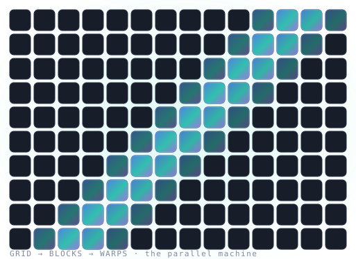

Eighty-four lessons that carry you from slopes and sigma-notation to CUDA kernels, ML infrastructure, HPC simulation, real-time graphics, and portable GPU code — every number executed, every claim defensible in an interview.
New here? Begin at Module 1 · Lesson 1 — no prerequisites but school algebra.

A single 43-lesson core takes you from mathematics to confident CUDA. Then choose a track — each an end-to-end course sharing that foundation. Pick where you want to end up.
The core · Modules 1–5Math from school level · programming from zero · C/C++ for GPU work · how computers & GPUs actually work · CUDA — ending in a matmul kernel taken from 2 GFLOP/s to ~40% of peak. 43 lessons · 132 diagrams
Backprop from school math → PyTorch internals → Triton → FlashAttention derived & verified → mixed precision → NCCL/FSDP → vLLM-era inference → a fused kernel served behind an endpoint.
Numerical calculus by experiment → cuBLAS/cuSOLVER → stencils with physics fixtures → Monte Carlo → MPI + GPUDirect → clusters → a defensible multi-node scaling study.
Coordinate math → the rasterization pipeline as SIMT hardware → Vulkan 1.4 → PBR lighting (energy-checked) → compute shaders → ray tracing → a renderer with a ray-traced effect, budgeted & PSNR-tested.
Your CUDA skills were never about CUDA: HIP, SYCL, OpenCL, WebGPU, Kokkos, Triton — one reduction across four backends with an honest, cost-and-watt benchmark. Includes a live WebGPU lab.
Every lesson has a card — concept, a worked example with real numbers, key points, quizzes, exercises — then a "go deeper" half with internals, field gotchas, a production scenario, and seven practice problems.
Every number is run in code, cited to an earlier lesson, or labeled representative. Reality is a sharper teacher than plausibility — the bugs found by running the numbers became the best lessons.
Each lesson ends in employable speech — the interview closer to its canonical question. Three capstones (a tuned kernel, a portability report, a renderer) are the portfolio you put on GitHub.
A roofline explorer, an occupancy calculator, a coalescing/sector visualizer, and a float-format bit explorer you poke at — plus a live WebGPU kernel that runs a real reduction on your GPU. The mental models, made muscle memory.
The whole learning loop is built in — retention, reference, and interview prep across all 84 lessons, cross-linked so you never leave the course.
~220 flashcards drawn from every lesson, scheduled with Leitner boxes so the fundamentals stick for good.
52 real GPU/CUDA questions, easy → hard, each with a model answer and a link to the lesson that teaches it.
A timed, scored exam over every module and track — pass at 70%, then review every answer with its lesson.
The whole curriculum as one interactive dependency map — the core path, then the four tracks.
Also built in: a searchable glossary with inline tooltips, printable cheat sheets, course-wide search (press / on any page), read-aloud on every lesson, runnable Python in the Module 2 lessons, and an Ask AI assistant in the corner.
Open index.html in any browser — no install, no internet, no build step. Quizzes, progress tracking, and all 254 diagrams work from file://. Progress is saved in your browser. Work the core in order, then pick a track; budget 6–12 months part-time for the whole thing, or go straight to the track you need. Every lesson tells you which exercises run on free Colab, which need your own GPU, and which run in any browser.